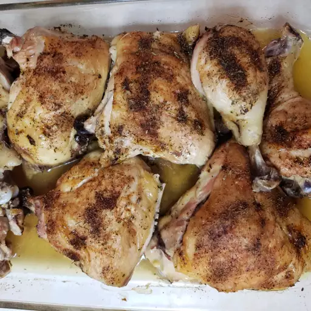

Chicken Thighs

Chicken thighs should be a standard in any home.
They are easy to make and more tasty than chicken breasts.
Below is a quick guide to cooking the tastiest chicken part.
Ingredients
Chicken Thighs- any amount
Salt
Pepper